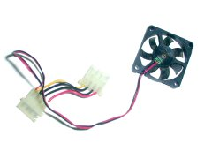

起床的時候，懷著不確定的心情打開電腦。
果不其然，風扇的聲音還是很大。用手碰觸一下，陣陣的震動傳來。 四根固定螺絲把泡綿的消震效果打了折扣，預感還真是準。
不過當我梳洗過回房間，坐回電腦前時，不覺得聲音很大了。
大概是剛起床那陣神智不清，加上從安靜中突然轉變為聽到電腦開機時的聲音， 讓我覺得聲音很大。
電腦的噪音來源通常來自“會轉的東西”，CPU 風扇、POWER 風扇、 機殼風扇就算在散熱類，硬碟、光碟機、軟碟機就算在儲存裝置類好了。 這兩大類當中儲存裝置不可能不裝，所以我們只能選擇聲音小的來裝。
不過，另一個電腦聲音很大的原因在於我為了散熱沒蓋機殼。前陣幫人組了台電腦， 安安靜靜速度又快得要命（Celeron 600超到900），組完羨慕得要死 （自己還在用Celeron 300超到450）。那台電腦從開電源到進98桌面，20秒不到。@_@